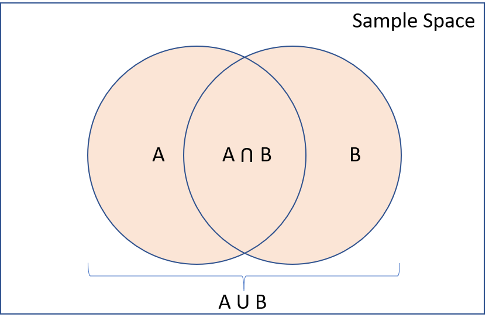

AE 07: Practicing with probabilities
Suggested answers
Goal
Understand and calculate basic probabilities using a real-world dataset.
Data
A cohort study on coffee consumption and mortality from:

Did not die |
Died | |
|---|---|---|
| Does not drink coffee | 5438 | 1039 |
| Drinks coffee occasionally | 29712 | 4440 |
| Drinks coffee regularly | 24934 | 3601 |
Source: https://www.ncbi.nlm.nih.gov/pmc/articles/PMC5788283/
Definitions:
Event A: The person died.
Event B: The person is a non-coffee drinker.
Two important rules
Suppose we have events \(A\) and \(B\), with probabilities \(P(A)\) and \(P(B)\) of occurring. Based on the Kolmogorov axioms:
- Complement Rule: \(P(A^c) = 1 - P(A)\)
- Inclusion-Exclusion: \(P(A \text{ or } B) = P(A) + P(B) - P(A \text{ and } B)\)

Exercise
Calculate the following probabilities for a randomly selected person in the cohort:
- Total number of people in the cohort.
\(Total=5438+1039+29712+4440+24934+3601=69604\)
- \(\small{P(A)}\): Probability that the person died.
\(\small{P(A)} = \frac{1039+4440+3601}{69604}=\frac{9080}{69604}\approx0.1305\)
- \(\small{P(B)}\): Probability that the person is a non-coffee drinker.
\(\small{P(B)} = \frac{5438+1039}{69604} = \frac{6477}{69604} \approx 0.0931\)
- \(\small{P(A \text{ and } B)}\): Probability that the person died and is a non-coffee drinker.
\(\small{P(A \cap B)}=\frac{1039}{69604} \approx 0.0149\)
- \(\small{P(A \text{ or } B)}\): Probability that the person died or is a non-coffee drinker.
\(\small{P(A \cup B)}=\small{P(A)}+\small{P(B)}-\small{P(A \cap B)}=0.1305+0.0931-0.014\)
- \(\small{P(A \text{ or } B^c)}\): Probability that the person died or is not a non-coffee drinker.
\(\small{P(A \cup B)}=\small{P(A)}+\small{P(B)}-\small{P(A \cap B)}\)
First, calculate \(\small{P(B^c)}\):
\(\small{P(B^c)}=1-\small{P(B)}=1-0.0931=0.9069\)
Then calculate \(\small{P(A \cap B^c)}\) (people who dies and drink coffee occasionally or regularly):
\(\small{P(A \cap B^c)}=\frac{4440+3601}{69604}=\frac{8041}{69604}\approx0.1155\)
Finally, calculate \(\small{P(A \text{ or } B^c)}\):
\(\small{P(A \cup B^c)}=0.1305+0.9069-0.1155 \approx 0.9219\)
Discussion Questions:
- What do these probabilities tell us about the relationship between coffee consumption and mortality in this cohort?
The probabilities calculated provide insights into the relationship between coffee consumption and mortality:
\(\small{P(A)}\approx0.1305\): About 13.05% of the people in the cohort died.
\(\small{P(B)} \approx 0.0931\): About 9.31% of the people in the cohort do not drink coffee.
\(\small{P(A \text{ and } B)} \approx 0.0149\): About 1.49% of the people in the cohort both died and do not drink coffee.
\(\small{P(A \text{ or } B)} \approx 0.2087\): About 20.87% of the people in the cohort either died or do not drink coffee.
\(\small{P(A \text{ or } B^c)} \approx 0.9219\): About 92.19% of the people in the cohort either died or drink coffee.
From these probabilities, we can observe that the proportion of people who died (P(A)) is higher among those who drink coffee compared to non-coffee drinkers. However, the data does not immediately suggest a direct causative effect of coffee consumption on mortality. Rather, it describes the distribution of mortality across different coffee consumption groups.
- Are there any limitations to interpreting these probabilities as causal effects?
Yes, there are several limitations to interpreting these probabilities as causal effects:
Confounding Factors: The relationship between coffee consumption and mortality might be influenced by other variables (e.g., age, health status, lifestyle choices) that were not accounted for in this dataset.
Correlation vs. Causation: These probabilities show an association, but they do not prove that coffee consumption causes changes in mortality rates. There might be underlying factors that drive both coffee consumption habits and mortality.
Sampling Bias: If the cohort is not representative of the general population, the results might not be generalizable.
Data Quality: The accuracy and reliability of the data collected on coffee consumption and mortality could affect the outcomes. Misreporting or measurement errors can lead to biased probabilities.
- How might additional factors or confounders influence these probabilities?
Additional factors or confounders could significantly influence these probabilities:
Age: Older individuals might have different coffee consumption patterns and mortality risks compared to younger individuals.
Health Status: Individuals with pre-existing health conditions might be more likely to avoid coffee and have higher mortality rates.
Lifestyle Choices: Other lifestyle factors such as diet, exercise, smoking, and alcohol consumption could affect both coffee drinking habits and mortality rates.
Socioeconomic Status: Income, education, and access to healthcare can influence both coffee consumption and overall health outcomes.
To better understand the relationship between coffee consumption and mortality, it would be necessary to control for these confounders through statistical methods such as multivariate analysis or propensity score matching. This would help isolate the effect of coffee consumption from other influencing factors.